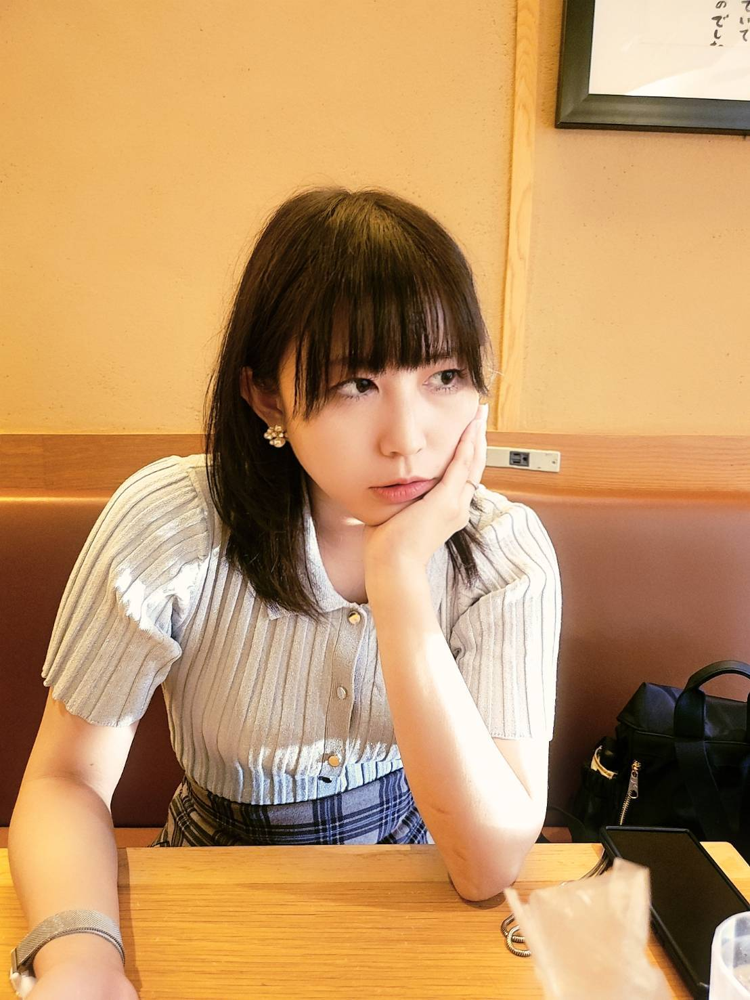
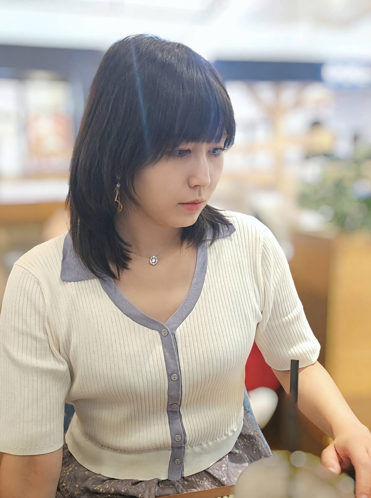
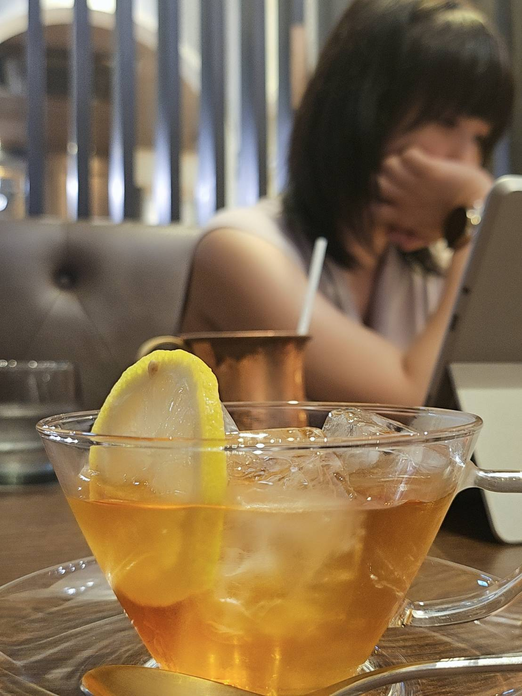
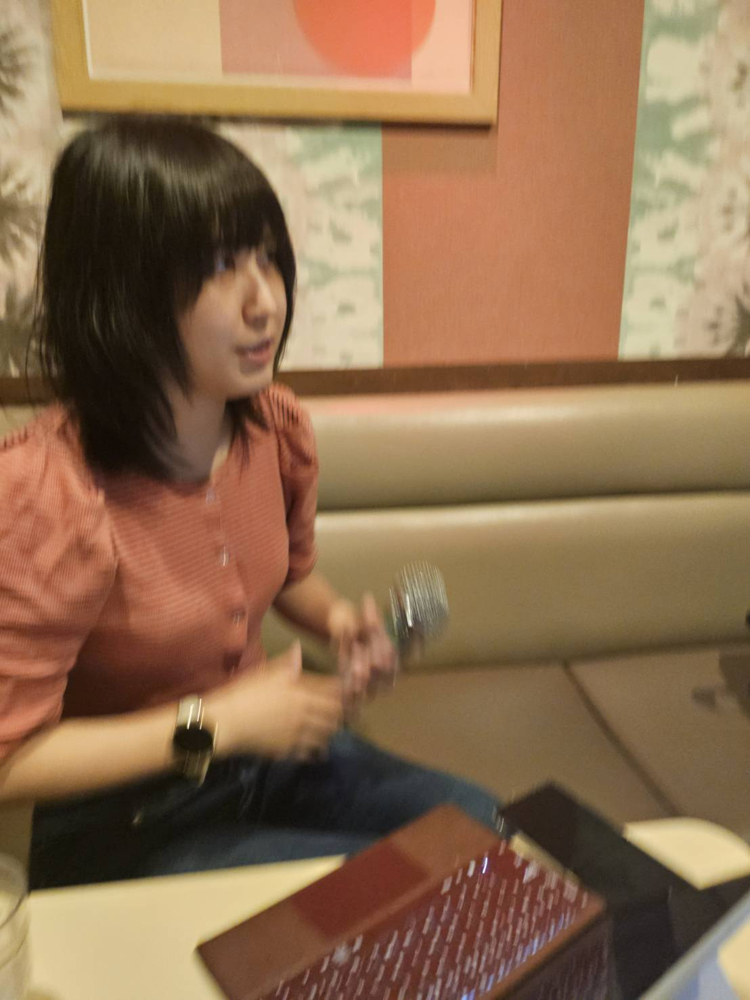

作品の冒頭に置かれた四編、シモーヌ・ヴェイユへのまなざし、そして「児童相談所の手記」——。優さんの世界観の核心に迫る中編です。
このインタビューについて
本稿は、デビュー作『私には帰る"場所"がない』の出版を控える著者・優さんへの独占インタビュー中編です。作品構成の意図、思想的な影響、幼少期の記憶を丁寧に掘り下げます。
優さんの作品は膨大です。デビュー作品でこれだけストックがある作家さんも珍しいのではないでしょうか。書くスピードもとても速いですね。インスピレーション型であるように見えて、実に精緻な筆致です。静寂を捉えたと思ったら、休むまもなく、動へ動く。自由自在な文体にその動きが垣間見えます。インタビューの後編では作品名を挙げながら、優さんの世界観を掘り下げ、その魅力に迫りたいと思います。
まずは、最初にお目通しいただきたかった作品として「生き延びるための忘却」があります。これは、２０代の頃に書いたもので明示しておくと「生き延びるため～」は斎藤環さんの『生き延びるためのラカン』のオマージュです。余談ですが、昔からひとつのカルチャーとして界隈同士でオマージュし合い戯れるという文化があります。今はそうした遊び心が許されにくくなっており、オマージュやインスパイアが果たしてどれほどの射程を持つだろうかと考えています。
それで、ここから本題に戻すと、その「～忘却」はまさに意識的に忘れること、これは強迫的にひとつの事象に固着し反芻する行為が却って嫌な記憶を定着させ思い出に殺されることから、何事もいなすこと、気に留めないこと、出来事の解釈強度を弱めること、浮き沈み自体を深刻に捉えないこと、などなどある種の「幸福論」のような人生哲学を疾風怒濤の２９歳までの人生で会得した技術として、これは３５歳の今見ても充分効用があるのではないかと思い、功利主義的な側面から公益性が高く、またとてもゴーストライターがいるとは思えないような個性的で自分らしい筆致の浮き出た文章をピックアップしました。無茶苦茶自賛してますが(笑)。
次に「『ファウスト』について」です。これはゲーテの『ファウスト』を題材にしていますが、単なる文学批評ではなく、私自身の人生経験と重ね合わせたものになっています。悪魔との契約というモチーフを通して、現代における欲望や自己実現のあり方を問い直す意図がありました。

「なぜ猫はいきなり道路に飛び出し身の危険を晒すのか」は、猫というメタファーを使って自分自身をこき下ろすユーモアを交えた作品です。危険を顧みず行動してしまう人間の性を、猫の行動に投影して描いています。
「絶望のポリス的動物による無軌道な随筆」に関しては、これは素朴に反応が良く採用いたしました。瞬発力のある筆通りになったかと思います。私はどうもプロの芸人さんみたいに訓練を積んでいないくせに、はがき職人のように絶えず大喜利を頭の中で思い浮かべて笑いを取ろうとしてしまう部分がありまして、この文章は結構ふざけちゃいましたね。もしかするとこの自分のまだらに受けた義務教育の欠片が独特のタッチとして文体に表象されているのかもしれなくて、それだからこそ面白がってもらえるのかも知れません。私としては、未だになにかよく分からないけれど、褒められるのでいそいそと書き進めている感じでして、未だに文体を試行錯誤しているために心の揺らぎがそのまま原稿に出ています(笑)。だからいつも文体が安定しません。
対比として話してゆくとヴェイユと私が決定的に違うのは、その出自です。ヴェイユは兄アンドレも稀代の数学者でエリート一家なんです。そこで、ユダヤ人である自分の血に悩むようになり、教育の仕事をしていたにも拘らず、教鞭を投げ打って敬虔にも工場で働き出したんです。ヴェイユは賢人なので歴史や机上で真理を知る人で、私は愚人なので何度も失敗を繰り返し、やっと体得するタイプです。それでも性懲り無く失敗する。そしてヴェイユは自分に厳しいです。自分の命すら差し出す覚悟や信仰がある。傍ら私は自分に甘く、必ずしも道徳的とは言えません。類似しているところと言えば、抗議的であり議論が大好き。男勝りで師匠の選び方が似ている。友人に恵まれている。なるべくストイックに生きようとしている。などでしょうか。

日本では、苦しむほど徳を積む、といったある種の信仰心があります。努力した者は救われるという「公正世界仮説」が日本人をある程度の割合で貫いています。それだからこそ、努力せずに一見得しているように見える人を、効率的というよりもハックしていると捉える。狡猾さである。したがってなにより重厚なプロセスを儀礼として重んじる。これは批判しているのではなく、そうした傾向があるという話です。そしてその延長線上から時にはスパイト行動も起きる。苦労を重ねている人には相応の幸せが訪れて欲しいと願う。不幸な人が報われないという、その実ありふれた現実を私たちは本能的に後味悪く感じる。そうした因果律を重んじる国民性において、ヴェイユのストイシズムはきわめて日本的な労働観にも思えるのです。
苦しみこそ美徳であり、幸福の極致であり、喜びはいちじるしく矮小化される。しかしながらその微小な悦楽にこそ、巨大な労苦を凌駕し漂白する一滴が波紋を広げると。ヴェイユはそのように述べており、まさにその不条理性は生きることそのものですよね。ヴェイユはその不幸や苦しみに対してひたすら受動的に、何かを待ち望んでいる。現代では、コンプライアンス意識が浸透し、能動性や積極性がそもそも敬遠される場合もある。そうした時勢において、ヴェイユが掲げた受動性、恩寵を待つこと。こうしたスタティックな佇まいが非常に今日的に思えてならないのです。
また、『重力と恩寵』の章立てに「矛盾」というカテゴリーがあるように、ヴェイユのなかで矛盾それ自体が真理や真実そのものであり、綻びこそが完全体であると私は意訳します。一貫性は厳格さに繋がり、自他を苦しめ生き辛くさせます。ところが、矛盾はそれそのものがそもそも一つのフラクタル構造を成しており、ところどころが欠けている。しかしながら、幾何学的な法則性や連続性は保たれているので、きわめて生命的な構造を兼ねている。この不規則性こそが、すなわち矛盾こそが命の息吹そのものである。ヴェイユはなにかそうした真理を数学的に可視していたのではないかと考えます。あっ、いまちょうど「ヴェイユと矛盾」のゲラを校閲していたら、全く同じことを書いていましたね。
一言で言うと、あれは夢だったかもしれない「有り得た家族関係」でした。不特定多数の児童が集まり、そこに統括する長が何人かいる。自然と群れは群れたらしめる。今思えば非常に民俗学的な様相を呈していました。もちろん、私が観測した限りでは著しく風紀の乱れたような関係は見当たりませんでした。いまでも、あれは夢だったんじゃないか？と思うことがあります。それほど非日常を煮詰めた濃厚で圧縮された３か月でした。ただ、特筆すべきは児童相談所が疑似家族としてキラキラ輝く思い出になるほど、家庭はもっと陰鬱なものでした。皆んなどこか、避難したようなホッとした顔つきをしていました。それはなぜか。やはり閉鎖性に尽きます。いまとてもいい時代になりました。若年層に悲観してほしくないのは、この監視社会は窮屈で嫌なことだと思うかもしれないけれど、相対的に治安は良くなりやすいです。なぜなら絶えず人の目があるから。大人の思案することには必ず合理性があります。意味があって、実行している。

中編では、作品の冒頭を飾る四編の意図、そしてシモーヌ・ヴェイユが体現した「矛盾」という概念が、優さんの思想の核心に深く根ざしていることが明らかになりました。
「生き延びるための忘却」に込められた幸福論、猫というメタファーで自らをこき下ろすユーモア、そしてヴェイユの受動性と矛盾を「命の息吹」と捉えるまなざし——。いずれも、優さん独自の相対主義的な世界観を鮮やかに示しています。
「児童相談所の手記」では、一見「不幸」に見える体験が、実は「有り得た家族関係」という幸福の記憶であったという、幸不幸のリバーシブルな構造が描かれます。
人から見た不幸が内実は幸福であるという倒錯。それはSNS社会にも通じる、現代を生きる私たちへの静かな問いかけでもあります。
『私には帰る"場所"がない』は、2026年秋、デザインエッグ社より出版予定。電子版・紙版の同時発売が予定されている。